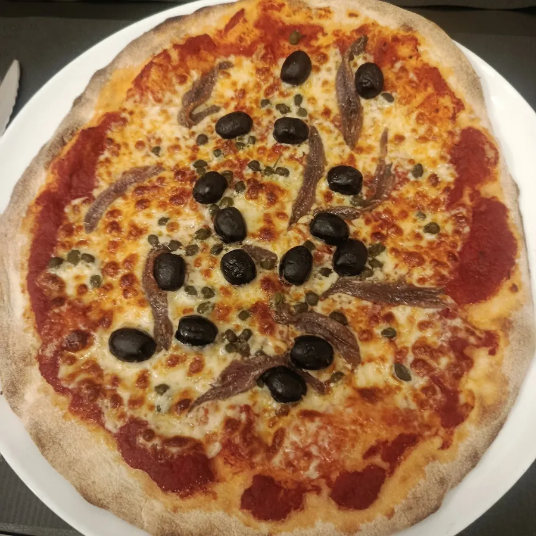
Sicilienne
Sauce tomate, mozzarella, anchois, câpres, olives noires.
Classique13,50 €
Pizzeria · Rue de la Station · Walcourt
Vingt-six pizzas, des foccacias à partager et les bières de la région. À emporter ou sur place, rue de la Station à Walcourt.
Du jeudi au lundi, le soir dès 17 h 30
4,8 sur 5 · 108 avis Google
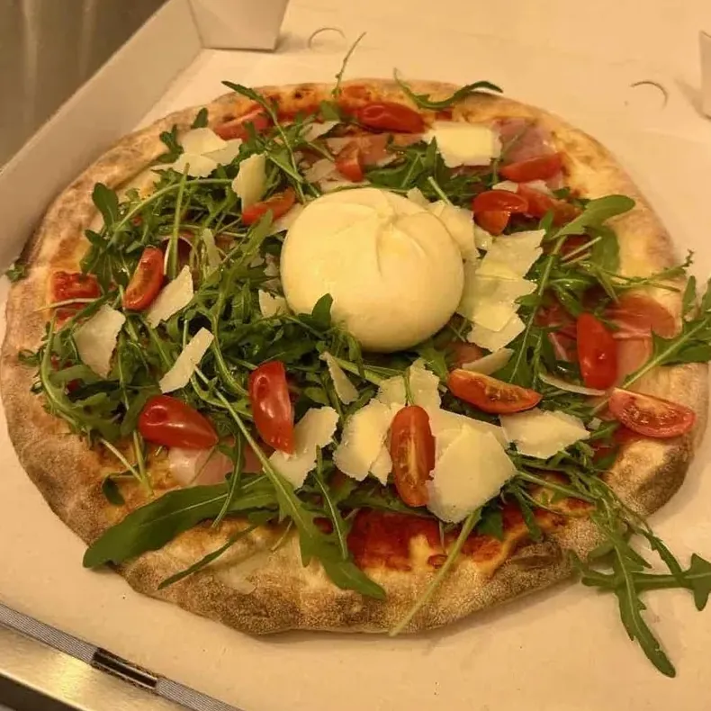
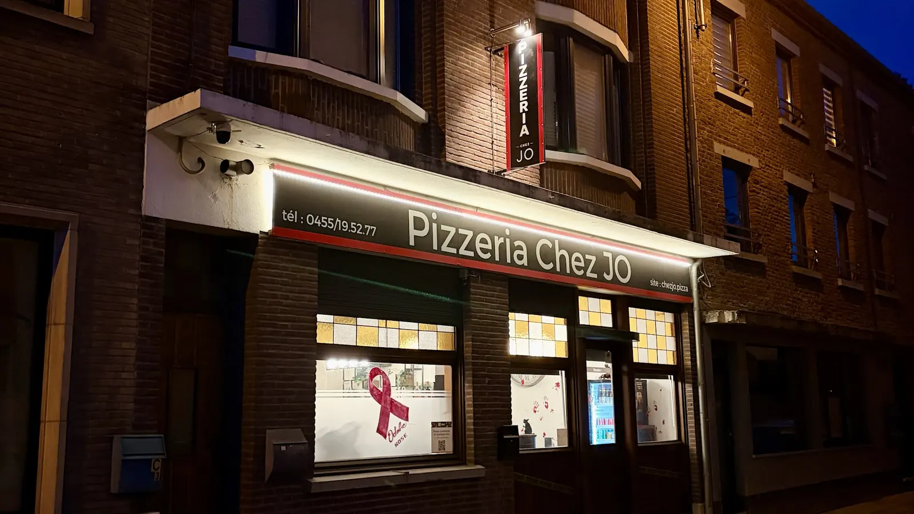
Quatre pizzas de la carte, photographiées telles qu'elles sortent de chez Jo, en salle ou dans leur boîte.

Sauce tomate, mozzarella, anchois, câpres, olives noires.
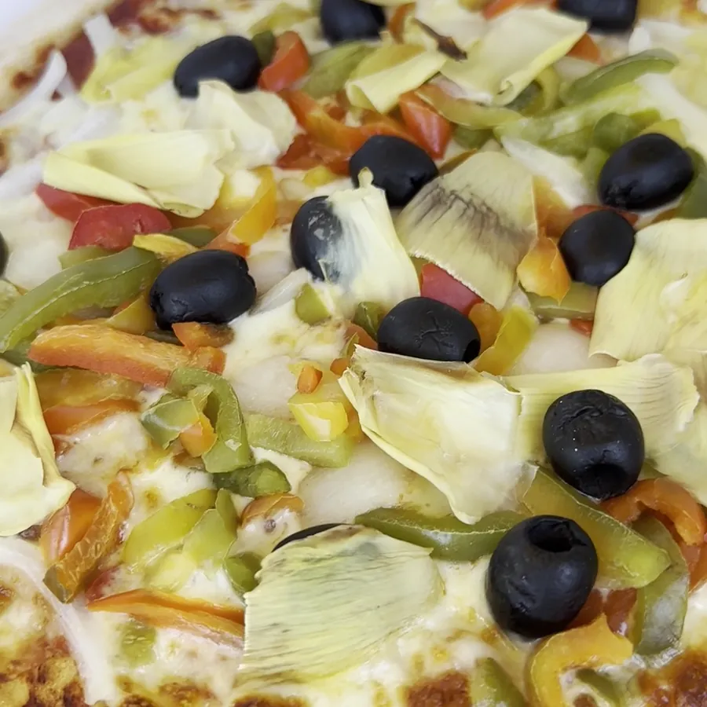
Sauce tomate, mozzarella, poivron, oignon, artichaut, olives noires.
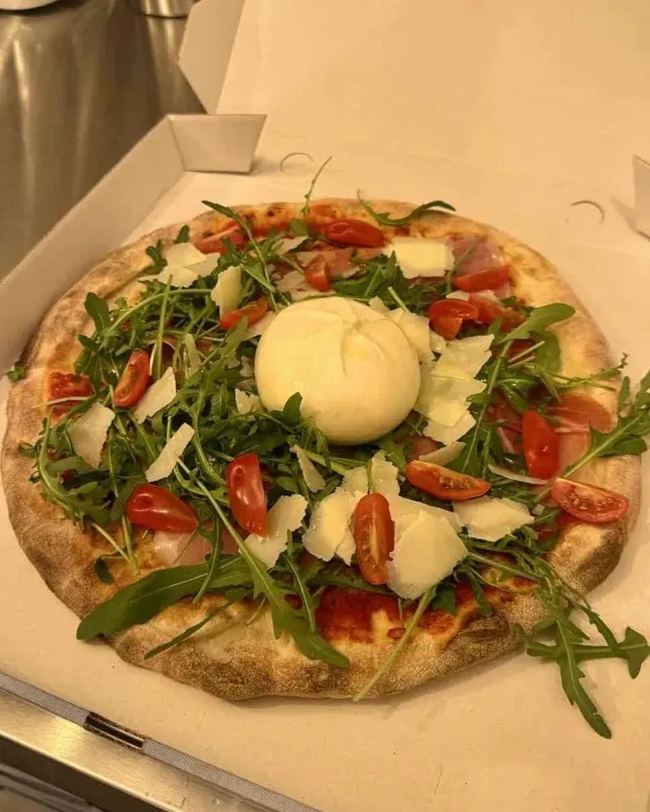
Après cuisson : jambon de Parme, roquette, parmesan, tomates cerises, huile d'olive, burrata.
Chez Jo
Chèvre, roquette, tranches de pomme, miel et sirop de Liège, sur sauce tomate et mozzarella.
Base crème, mozzarella, pomme de terre, oignons, lardons et raclette de Chimay.
Votre pizza, l'heure à laquelle vous passez, votre nom : la commande est prête à l'heure choisie.
Retrait aux heures d'ouvertureUne table sur place ? 0455 19 52 77
Toutes les pizzas sont sur sauce tomate et mozzarella, sauf mention contraire.
★parmi les plus populairesles pizzas premium
MargheritaSauce tomate, mozzarella10,50 €
Pesto11,50 €
JambonJambon, origan12,00 €
Salami12,00 €
Champignons12,00 €
ChorizoChorizo, olives noires12,00 €
ReginaJambon, champignons12,50 €
HawaïJambon, ananas, origan12,50 €
RomanaJambon, champignons, œuf13,00 €
MafiosaChorizo, champignons, œuf13,00 €
SicilienneAnchois, câpres, olives noires13,50 €
Forêt★Champignons, oignon, lardons13,50 €
VégétariennePoivron, oignon, artichaut, olives noires13,50 €
Chèvre classiqueChèvre, miel13,50 €
Quatre saisonsJambon, champignons, artichauts, olives noires, origan14,00 €
Quatre fromages★Gorgonzola, taleggio, brie14,00 €
ThonThon, oignon, olives noires14,50 €
CalabraiseChorizo, anchois, câpres14,50 €
Kebab★Pitta, oignon, sauce pitta15,00 €
SavoyardeBase crème, pommes de terre, oignon, lardons15,00 €
TruffeChampignons, huile de truffes, roquette15,50 €
ScampisScampis, huile à l’ail15,50 €
Parma★Jambon de Parme, roquette, copeaux de parmesan, tomates cerises, huile d’olive16,00 €
Chez JoChèvre, roquette, tranches de pomme, miel, sirop de Liège17,00 €
La bouchèreChorizo, jambon, lardons, œuf17,50 €
La burrataAprès cuisson : jambon de Parme, roquette, copeaux de parmesan, tomates cerises, filet d’huile d’olive, burrata19,50 €
Foccacia façon JoPâte épaisse, ail, mozzarella, filet d'huile d'olive9,50 €
Foccacia traditionnellePâte à pizza, ail, mozzarella, filet d'huile d'olive11,00 €
Dominicain doubleBlonde, 6 %4,50 €
Dominicain triple★« La bière régionale numéro 1 chez Jo »5,00 €
Dominicain quadrupleBlonde, 9 %5,50 €
Forge tripleBlonde, 9 %5,50 €
Chimay Bleue9 %4,50 €
La Guilbonnerie HéritageBordeaux rouge, merlot et cabernet sauvignon24,00 €
La Guilbonnerie roséVin sec24,00 €
Coffret Gin de WalcourtBouteille de 50 cl et deux verres, sur commande (2 à 3 jours ouvrables)55,00 €
Softs, eaux et Ice Tea : 2,50 € · Jupiler, Hoegaarden rosée, Desperados : de 3 à 4 €Carte et prix relevés sur la page de commande de Chez Jo, le 19 novembre 2026
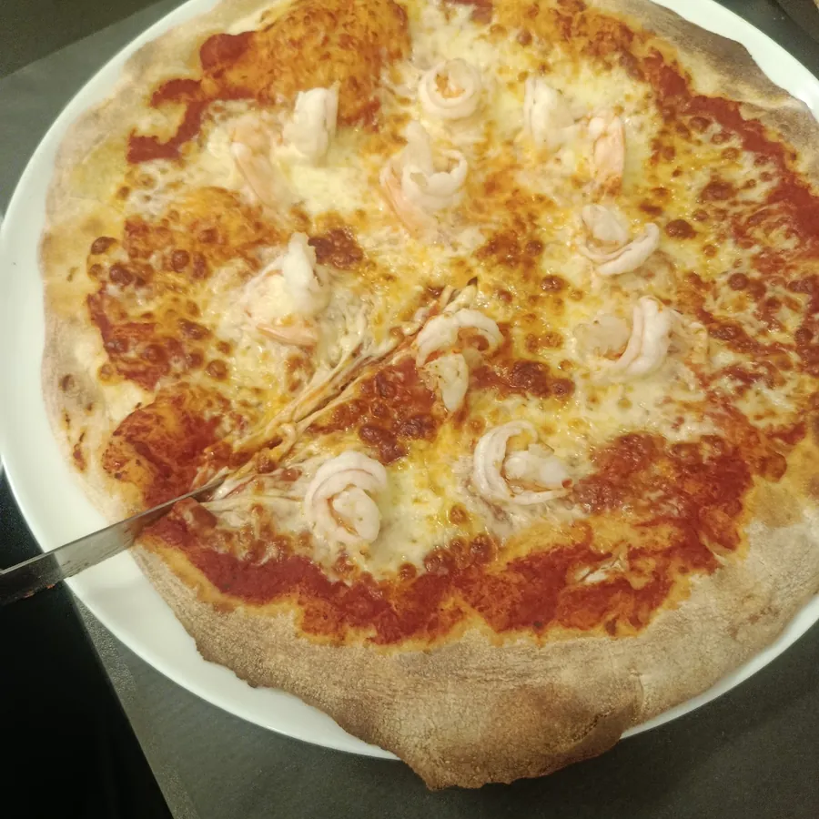
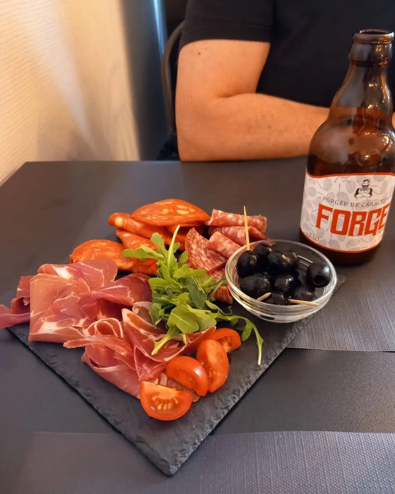
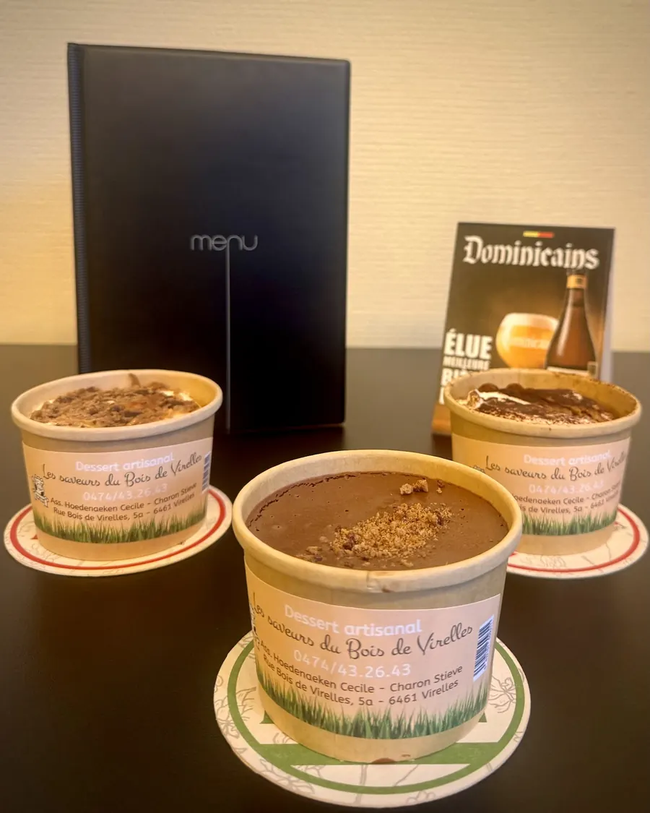
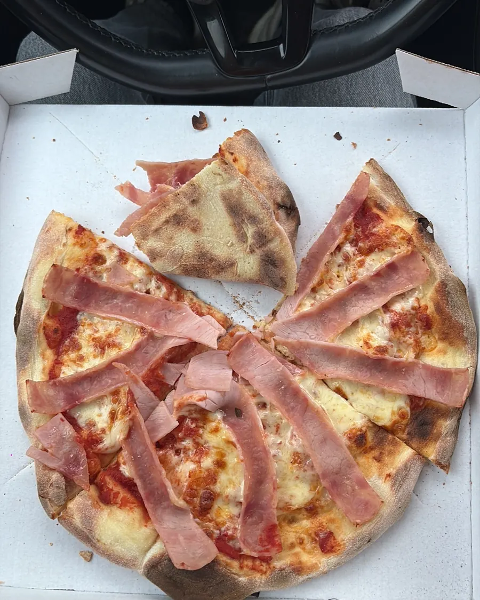
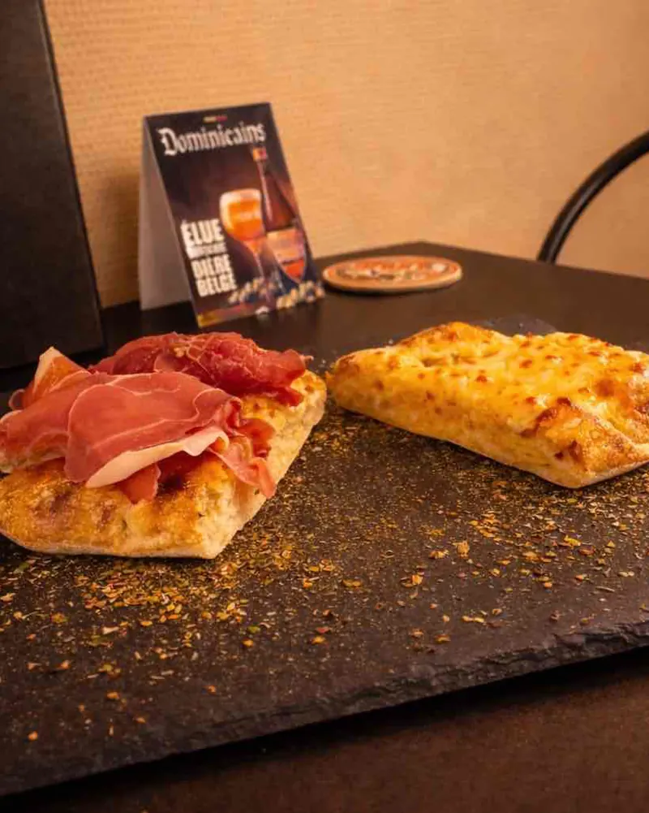
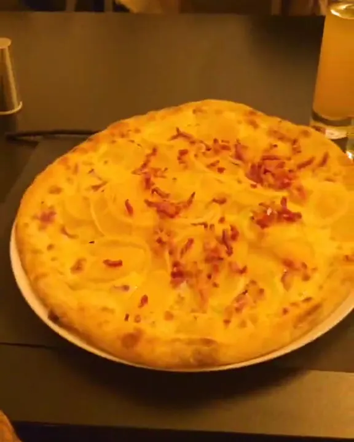
| lundi | 17 h 30 – 21 h 30 |
|---|---|
| mardi | fermé |
| mercredi | fermé |
| jeudi | 17 h 30 – 21 h 30 |
| vendredi | 11 h 30 – 13 h 3017 h 30 – 22 h |
| samedi | 17 h 30 – 22 h |
| dimanche | 12 h – 13 h 3017 h 30 – 21 h 30 |
À emporter et sur place, aux mêmes heures.